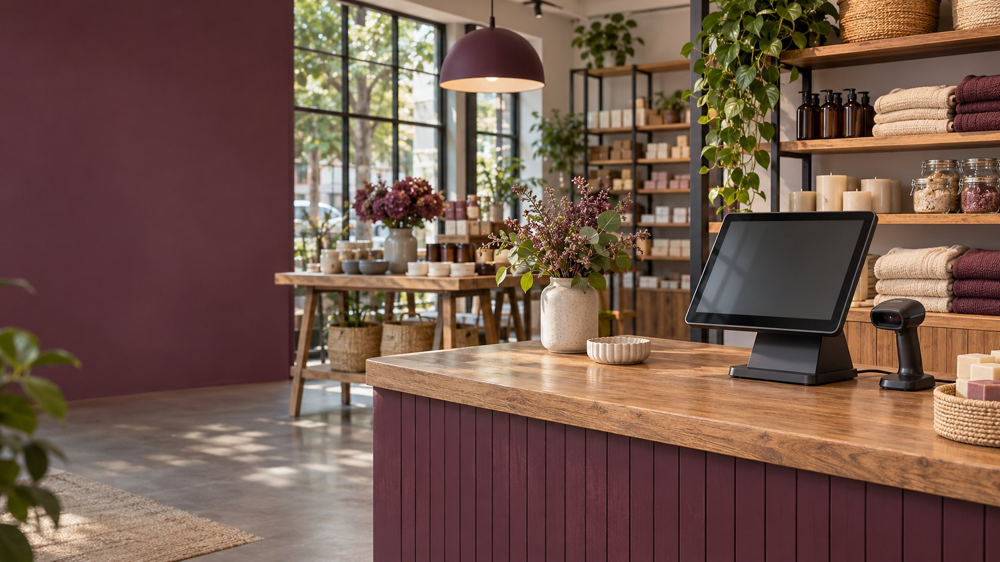

Catalog and variants
Map sizes, colors and other options to the way you buy and sell items.

POINT OF SALE FOR RETAIL
Retail Inc helps you plan, install and manage point-of-sale systems. Set up checkout, inventory and payments around the way your team works today and the locations you plan to open next.
Start with the way items move from receiving to the shelf to the register. Then choose hardware and software that fit your catalog, your people and your reporting needs.
FIND YOUR INDUSTRY
Explore the workflows that matter in your industry. We’ll review your requirements, select a suitable platform and plan installation and ongoing management together.
Plan product variants, barcode labels, exchanges and stock visibility across your selling channels.
Discuss your apparel and footwear setup ↗Discuss shades, product ranges, promotions and the way your team tracks replenishment.
Discuss your beauty and cosmetics setup ↗Review scanning, price changes, receiving and any scale or perishable inventory requirements.
Discuss your grocery and specialty food setup ↗Plan counter equipment, frequent price updates and quick item lookup with your team.
Discuss your convenience stores setup ↗Consider gift receipts, seasonal assortments, barcode labels and items from multiple suppliers.
Discuss your gift and souvenir shops setup ↗Review product lookup, purchasing, units of measure and how staff handle special orders.
Discuss your hardware and home improvement setup ↗Plan repeat purchases, varied pack sizes, stock counts and supplier ordering.
Discuss your pet supplies setup ↗Discuss ISBN and barcode scanning, category reporting and receiving new releases or collections.
Discuss your books and stationery setup ↗Review editions, product categories, seasonal releases and inventory counts.
Discuss your toys, games and hobbies setup ↗Review serial-number requirements, accessories, returns and product information before choosing a platform.
Discuss your consumer electronics setup ↗Discuss individual item records, stock controls, pricing and staff access requirements.
Discuss your jewelry and accessories setup ↗Plan sizes, variants, seasonal ranges and stock across different departments.
Discuss your sporting goods and outdoor setup ↗Review changing assortments, receiving, outdoor checkout needs and product labeling.
Discuss your lawn and garden setup ↗Discuss pack sizes, promotions and applicable age-verification requirements with your selected provider.
Discuss your wine and spirits setup ↗Review supplements, specialty food, category organization and any expiry-tracking requirements.
Discuss your health and wellness retail setup ↗Plan large and small items, product options, delivery requirements and purchasing workflows.
Discuss your home goods and décor setup ↗Discuss one-off items, pricing, categories and labeling as new merchandise arrives.
Discuss your thrift and resale setup ↗Review mobile checkout, temporary setups, transfers and reporting across locations.
Discuss your pop-ups and multi-location retail setup ↗Platform features and integrations are reviewed against your requirements before system selection.
Plan registers, payments and stock workflows around the way you sell.
Explore retail POS ↗Prepare your catalog, test your lanes and plan the switch around trading hours.
Explore installation ↗Plan for changes, troubleshooting and new stores after launch.
Explore management ↗SPECIALTY RETAIL
For boutiques, gift shops, home goods stores and specialty retailers with a catalog that changes by season.
THE STORE WORKFLOW
Plan item setup, barcodes and product variants before stock reaches the floor.
Test scanning, discounts, exchanges and receipts at the counter.
Decide how staff will count inventory and flag items for reorder.
Make the everyday tasks easy to teach.
Map sizes, colors and other options to the way you buy and sell items.
Review payment hardware, refund controls and return policies with the selected platform.
MARKETS AND CONVENIENCE
Plan your lanes around basket size, scanning speed and the way staff replenish frequently sold items.
Make room for busy hours.
Evaluate scanner, receipt printer and payment terminal placement.
Review how managers update pricing, receive shipments and check stock.
CHECKOUT PLANNING
Identify where equipment and customer displays fit.
Walk through voids, returns and price checks.
Decide who closes lanes and reviews sales reports.
Define what your store needs now, who handles each part of the rollout and what changes after launch.
Look at your catalog, checkout, payments and inventory with the people who run the store.
Confirm equipment, catalog data, testing and staff training before switching systems.
Agree on support scope and a process for adding lanes, products or locations.
Check the exact models of scanners, printers, payment terminals and other devices against the selected platform before deciding what to replace.
Review your export format, SKU and barcode fields, product variants and inventory counts before agreeing on what can be imported.
That depends on both platforms. Confirm how orders, returns and inventory sync before choosing the integration.
Start with what you sell, how many locations you run and what you want to improve.